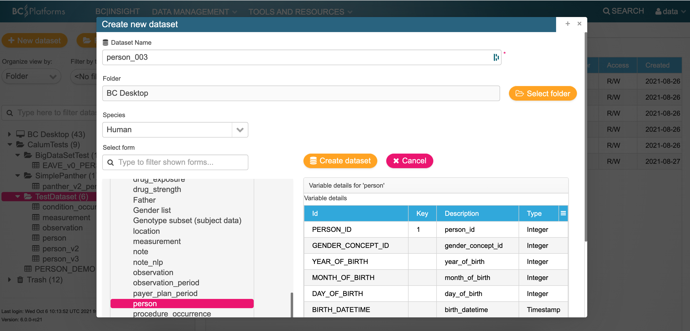
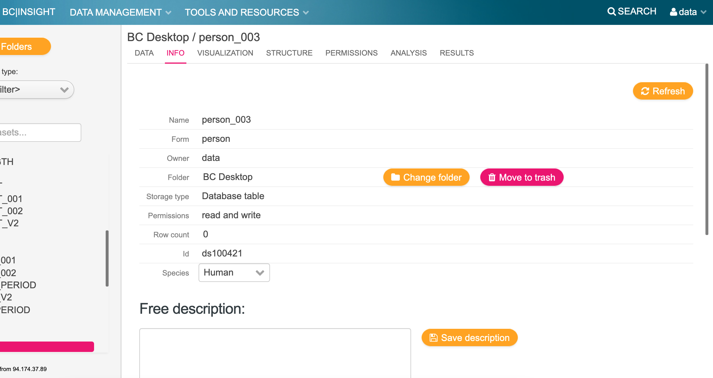

ETL Developer Guide
1. Initial Setup¶
The following is a walkthrough of how to run an automated ETL process using test data available as part of the package.
It is assumed that BCLink systems has already been an installed on a host machine.
Setting up a working directory
To use ETL with bclink, you must be the user bcos_srv, i.e. when ssh'd into the machine hosting bclink:
ssh <IP address of host machine>
sudo -s
su - bcos_srv
The best practise is to create a working directory in the following location:
mkdir /usr/lib/bcos/MyWorkingDirectory/
cd /usr/lib/bcos/MyWorkingDirectory/
Installing carrot-cdm
It is also best practise to setup a virtual python environment and install the tool:
python3 -m venv automation
source automation/bin/activate
pip install pip --upgrade
pip install carrot-cdm
Check the version:
carrot info version
>=0.4.1 for the automation to work.
Get input data
Test data can be found in th data_folder:
$ ls $(carrot info data_folder)/test/
automation expected_outputs inputs rules scan_report
Copy the data (or use a symbolic link) into your current working directory:
$ pwd
/usr/lib/bcos/MyWorkingDirectory
$ mkdir input_data
$ cp -r $(carrot info data_folder)/test/inputs/original input_data/001
$ ls input_data/001
covid19_antibody.csv Covid19_test.csv Demographics.csv Symptoms.csv vaccine.csv
Get a rules json file
As associated example mapping rules json file for this test dataset can be found and copied over to the working directory:
$ cp -r $(carrot info data_folder)/test/rules/rules_14June2021.json rules.json
$ carrot display json rules.json |& head -15
{
"metadata": {
"date_created": "2021-06-14T15:27:37.123947",
"dataset": "Test"
},
"cdm": {
"observation": {
"observation_0": {
"observation_concept_id": {
"source_table": "Demographics.csv",
"source_field": "ethnicity",
"term_mapping": {
"Asian": 35825508
}
},
2. Setup Data¶
To the run the tool and automatically upload data to bclink, you must be logged in as the user bcos_srv, therefore this user must have permissions to view the data.
Granting data access to a user
There are many ways of doing this on CentOS via chown and/or chmod. You should contact your system administrator to do this if your are not experienced and/or don't have root access (that you may need).
chown -R <user/group>:<group> <path to data>
3. Setup a yaml configuration file¶
The next step is to create and configure a yaml file for the tool to digest. This yaml file must contain the location of the "rules" json file, provided to you by the connect team, and the path of the input data.
Minimal YAML
Create a file called config.yaml and insert the following lines and save:
rules: <path to rules .json file>
data:
- input: <path to folder containing input .csv file>
output: <path to a folder where you want to save the output data e.g. `./output_data/`>
Example:
rules: /usr/lib/bcos/MyWorkingDirectory/rules.json
data:
- input: /usr/lib/bcos/MyWorkingDirectory/input_data/
output: /usr/lib/bcos/MyWorkingDirectory/output_data/
YAML with multiple data folders
Similarly if you have multiple data dumps, you can configure the yaml like so:
rules: <path to rules .json file>
data:
- input: <path to folder containing input .csv file>
output: <path to a folder where you want to save the output data e.g. `./output_data/001/`>
- input: <path to a 2nd folder containing input .csv file>
output: <path to a 2nd folder where you want to save the output data e.g. `./output_data/002/`>
Note
While the tool is running you can edit this file to append more data paths...
YAML to watch a directory for new data dumps
Create a new file called config.yaml that will do the following:
- Look every 1 minute in the folder
input_datafor any subfolders containing inputcsvdata files - Run pseudonymisation on this data with a salt of value
00ed1234daand save the pseudonymised data in the folderpseudonymised_input_data - Run the transform of the dataset into CDM based on the rules saved in
rules.json - Upload this data into bclink link tables (e.g. person.tsv → person_test_data_v1)
clean: true
rules: /usr/lib/bcos/MyWorkingDirectory/rules.json
log: /usr/lib/bcos/MyWorkingDirectory/carrot.log
data:
watch:
minutes: 1
input: /usr/lib/bcos/MyWorkingDirectory/input_data
output: /usr/lib/bcos/MyWorkingDirectory/mapped_data
pseudonymise:
output: /usr/lib/bcos/MyWorkingDirectory/pseudonymised_input_data
salt: 00ed1234da
4. Setup and Check BCLink tables¶
By default, if the Carrot documentation for setting up BCLink has been followed correctly, you should already have tables created for the various bclink tables, e.g.:
- person
- condition_occurrence
- measurement
- observation
- drug_exposure
Check if your tables exist
With a minimal yaml configuration, you can perform a check to see if the tables exist and that the tool is able to interact with them.
carrot etl bclink --config config.yml check_tables
(automation) [bcos_srv@link-test-dt Demo]$ carrot etl bclink --config config.yml check_tables
2021-11-17 10:33:31 - check_tables - INFO - printing to see if tables exist
2021-11-17 10:33:31 - run_bash_cmd - NOTICE - bc_sqlselect --user=bclink --query=SELECT EXISTS (SELECT 1 FROM information_schema.tables WHERE table_name = 'person' ) bclink
2021-11-17 10:33:31 - run_bash_cmd - NOTICE - bc_sqlselect --user=bclink --query=SELECT EXISTS (SELECT 1 FROM information_schema.tables WHERE table_name = 'condition_occurrence' ) bclink
2021-11-17 10:33:31 - check_tables - INFO - {
"person": true,
"condition_occurrence": true
}
If you need to create new tables via the GUI
If you want to do some testing on new tables
Log in to the bclink web-gui as the 'data' user.
Create a table (example person)

Make a not of the dataset name and ID of the dataset i.e. ds100421

If you need to create new tables via the command line
Creating a person table called person_test_data_v1
cd /usr/lib/bcos/OMOP
$dataset_tool --create --form=PERSON --table=person_test_data_v1 --setname='PERSON_TEST_DATA_V1' --user=data bclink
Created dataset with table person_test_data_v1
CO-CONNECT-Tools also has this feature to create tables based on what has been setup in the yaml configuration file
carrot etl bclink --config <config> create_tables
2021-11-05 11:03:10 - run_bash_cmd - NOTICE - bc_sqlselect --user=bclink --query=SELECT EXISTS (SELECT 1 FROM information_schema.tables WHERE table_name = 'person_004' ) bclink
2021-11-05 11:03:10 - run_bash_cmd - NOTICE - dataset_tool --create --table=person_004 --setname=PERSON_004 --user=data --form=PERSON bclink
2021-11-05 11:03:10 - bclink_helpers - INFO - Created dataset with table person_004
--> All done with success.
...
If you needed to create tables / if your table check fails
If you have had problems with your tables and need to overwrite the default behaviour of the tool, you can append to the yaml file the following configurtion, to force the tool to upload the output (destination) tables to specific BCLink tables
bclink:
tables:
person: <bclink id of person table>
observation: <bclink id of observation table>
measurement: <bclink id of measurement table>
condition_occurrence: <bclink id of condition_occurrence table>
5. Clean the tables¶
Before you run the ETL (for the first time), it's important to make sure there's no existing data present in the tables you are uploading to.
From the Command Line
carrot etl bclink --config config.yml clean_tables
(automation) [bcos_srv@link-test-dt Demo]$ carrot etl bclink --config config2.yml clean_tables
2021-11-17 11:13:03 - bclink_helpers - INFO - Cleaning table person_001
2021-11-17 11:13:03 - run_bash_cmd - NOTICE - datasettool2 delete-all-rows person_001 --database=bclink
2021-11-17 11:13:05 - bclink_helpers - WARNING - Deleting all rows from dataset PERSON_001 (person_001)
2021-11-17 11:13:05 - bclink_helpers - WARNING - Deleted all 0 rows from dataset PERSON_001 (person_001)
2021-11-17 11:13:05 - bclink_helpers - INFO - Cleaning table condition_occurrence_001
2021-11-17 11:13:05 - run_bash_cmd - NOTICE - datasettool2 delete-all-rows condition_occurrence_001 --database=bclink
2021-11-17 11:13:07 - bclink_helpers - WARNING - Deleting all rows from dataset CONDITION_OCCURRENCE_001 (condition_occurrence_001)
2021-11-17 11:13:07 - bclink_helpers - WARNING - Deleted all 6 rows from dataset CONDITION_OCCURRENCE_001 (condition_occurrence_001)
2021-11-17 11:13:07 - clean_tables - INFO - removing output/001/
Specify within the YAML
Alternatively you can tell the tool to do this automatically by specifying it in the yaml configuration file, by appending the configuration:
clean: true
6. Run the ETL¶
Finally you are ready to execute the ETL...
Execute the full ETL
carrot etl bclink --config config.yml execute
Start of the Process¶
2021-11-17 11:18:06 - _process_list_data - INFO - ETL process has begun
2021-11-17 11:18:06 - run_bash_cmd - NOTICE - bc_sqlselect --user=bclink --query=SELECT count(*) FROM person_001 bclink
2021-11-17 11:18:06 - run_bash_cmd - NOTICE - bc_sqlselect --user=bclink --query=SELECT count(*) FROM condition_occurrence_001 bclink
2021-11-17 11:18:06 - bclink_helpers - INFO - ======== BCLINK SUMMARY ========
2021-11-17 11:18:06 - bclink_helpers - INFO - {
"person": {
"bclink_table": "person_001",
"nrows": "0"
},
"condition_occurrence": {
"bclink_table": "condition_occurrence_001",
"nrows": "0"
}
}
2021-11-17 11:18:06 - _process_list_data - INFO - New data found! [{'input': 'data/001/', 'output': 'output/001/'}]
2021-11-17 11:18:06 - execute - INFO - Executing steps ['clean', 'extract', 'transform', 'load']
Extracting data¶
...
2021-11-17 11:18:10 - execute - INFO - Executing ETL...
2021-11-17 11:18:10 - extract - INFO - starting extraction processes
2021-11-17 11:18:10 - run_bash_cmd - NOTICE - bc_sqlselect --user=bclink --query=SELECT count(*) FROM person_001 bclink
2021-11-17 11:18:10 - run_bash_cmd - NOTICE - bc_sqlselect --user=bclink --query=SELECT count(*) FROM condition_occurrence_001 bclink
2021-11-17 11:18:10 - transform - INFO - starting data transform processes
2021-11-17 11:18:10 - transform - INFO - inputs: ['data/001/']
2021-11-17 11:18:10 - transform - INFO - output_folder: output/001/
2021-11-17 11:18:10 - transform - INFO - indexer: {}
2021-11-17 11:18:10 - transform - INFO - existing_global_ids: None
Transforming data¶
...
2021-11-17 11:18:11 - InputData - INFO - Registering Questionnaire.csv [<class 'pandas.io.parsers.TextFileReader'>]
2021-11-17 11:18:11 - InputData - INFO - Registering Demo.csv [<class 'pandas.io.parsers.TextFileReader'>]
2021-11-17 11:18:11 - CommonDataModel::Demo_test - INFO - CommonDataModel created with version 0.0.0
2021-11-17 11:18:11 - CommonDataModel::Demo_test - INFO - Running with the output to be dumped to a folder 'output/001/'
2021-11-17 11:18:11 - CommonDataModel::Demo_test - INFO - Running with an InputData object
2021-11-17 11:18:11 - CommonDataModel::Demo_test - INFO - Added FEMALE of type person
...
2021-11-17 11:18:11 - CommonDataModel::Demo_test - INFO - Starting processing in order: ['person', 'condition_occurrence']
2021-11-17 11:18:11 - CommonDataModel::Demo_test - INFO - Number of objects to process for each table...
{
"person": 2,
"condition_occurrence": 2
}
...
2021-11-17 11:18:11 - CommonDataModel::Demo_test - INFO - working on person
2021-11-17 11:18:11 - FEMALE - INFO - Called apply_rules
2021-11-17 11:18:11 - FEMALE - INFO - Mapped birth_datetime
2021-11-17 11:18:11 - FEMALE - INFO - Mapped gender_concept_id
2021-11-17 11:18:11 - FEMALE - INFO - Mapped gender_source_concept_id
2021-11-17 11:18:11 - FEMALE - INFO - Mapped gender_source_value
2021-11-17 11:18:11 - FEMALE - INFO - Mapped person_id
2021-11-17 11:18:11 - FEMALE - INFO - Performing checks on data formatting.
2021-11-17 11:18:11 - FEMALE - WARNING - Requiring non-null values in gender_concept_id removed 1 rows, leaving 3 rows.
...
2021-11-17 11:18:11 - CommonDataModel::Demo_test - INFO - saving person to output/001//person.tsv
2021-11-17 11:18:11 - CommonDataModel::Demo_test - INFO - saving condition_occurrence to output/001//condition_occurrence.tsv
2021-11-17 11:18:11 - CommonDataModel::Demo_test - INFO - finished save to file
2021-11-17 11:18:11 - CommonDataModel::Demo_test - INFO - making output folder output/001//logs/
Loading Data¶
...
2021-11-17 11:18:11 - load - INFO - starting loading data processes
2021-11-17 11:18:11 - load - INFO - starting loading global ids
2021-11-17 11:18:11 - load - INFO - starting loading cdm tables
2021-11-17 11:18:11 - run_bash_cmd - NOTICE - dataset_tool --load --table=person_001 --user=data --data_file=output/001//person.tsv --support --bcqueue bclink
2021-11-17 11:18:11 - bclink_helpers - INFO - submitted job to bclink queue: link-test-dt:bcos_srv-1221
...
2021-11-17 11:19:00 - bclink_helpers - INFO - BATCH UPDDATE UPD_COMPLETION_DATE JOB STATUS ACTION
0 1327 2021-11-17-11.18.13.428504 2021-11-17-11.18.13.740396 13648 OK INSERT
2021-11-17 11:19:00 - bclink_helpers - INFO - Getting log for person_001 id=13648
2021-11-17 11:19:00 - run_bash_cmd - NOTICE - cat /data/var/lib/bcos/download/data/job13648/cover.13648
2021-11-17 11:19:00 - bclink_helpers - TEXT -
2021-11-17 11:19:00 - bclink_helpers - TEXT - Job #13646 Wed Nov 17 11:18:11 2021 BC|SNPmax 6.0.0-rc21
2021-11-17 11:19:00 - bclink_helpers - TEXT - ### Application: supp-dataload-batch
2021-11-17 11:19:00 - bclink_helpers - TEXT - ### User: data
2021-11-17 11:19:00 - bclink_helpers - TEXT - ### Database: bclink
2021-11-17 11:19:00 - bclink_helpers - TEXT - ### Run on local/localhost.localdomain
...
2021-11-17 11:19:05 - execute - INFO - looking for duplicates and deleting any
2021-11-17 11:19:05 - drop_duplicates - INFO - printing to see if tables exist
2021-11-17 11:19:05 - drop_duplicates - INFO - Looking for duplicates in condition_occurrence (condition_occurrence_001)
2021-11-17 11:19:05 - run_bash_cmd - NOTICE - bc_sqlselect --user=bclink --query=SELECT EXISTS (SELECT 1 FROM information_schema.tables WHERE table_name = 'condition_occurrence_001' ) bclink
...
2021-11-17 11:19:05 - bclink_helpers - INFO - no duplicates detected
2021-11-17 11:19:05 - bclink_helpers - INFO - [
{
"job_id": "13648",
"table": "person",
"bclink_table": "person_001",
"From": " output/001//person.tsv",
"To": " <data> PERSON_001 (person_001)",
"new_rows": "4 new row(s) inserted"
},
{
"job_id": "13649",
"table": "condition_occurrence",
"bclink_table": "condition_occurrence_001",
"From": " output/001//condition_occurrence.tsv",
"To": " <data> CONDITION_OCCURRENCE_001 (condition_occurrence_001)",
"new_rows": "6 new row(s) inserted"
}
]
Finished and waiting for changed¶
2021-11-17 11:19:05 - execute - INFO - done!
2021-11-17 11:19:05 - _process_list_data - INFO - Finished!... Listening for changes to data in config.yml